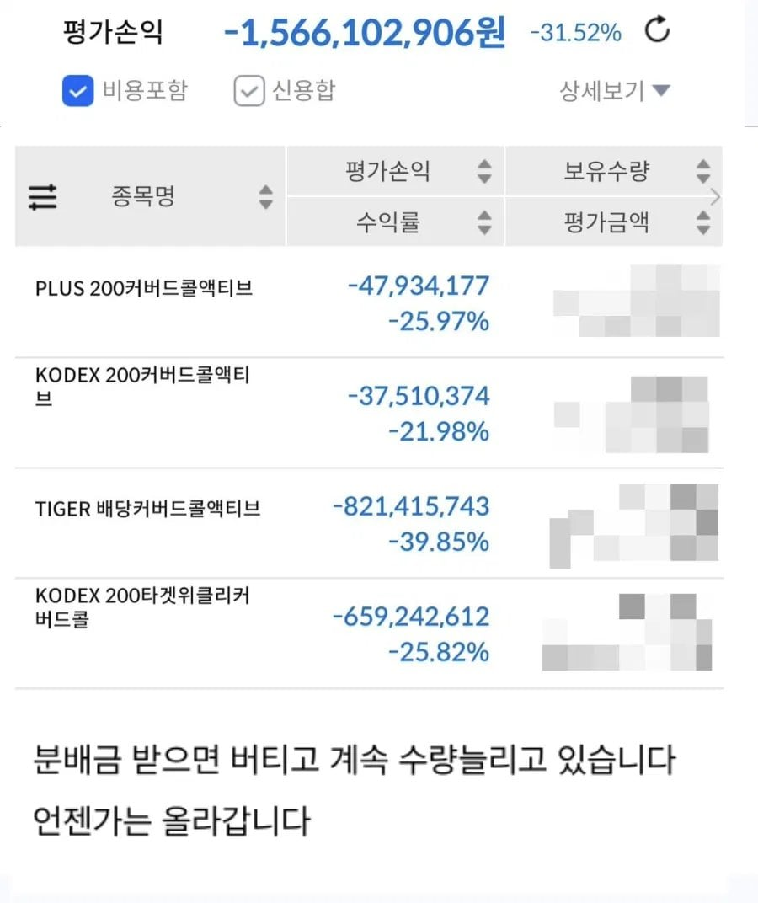
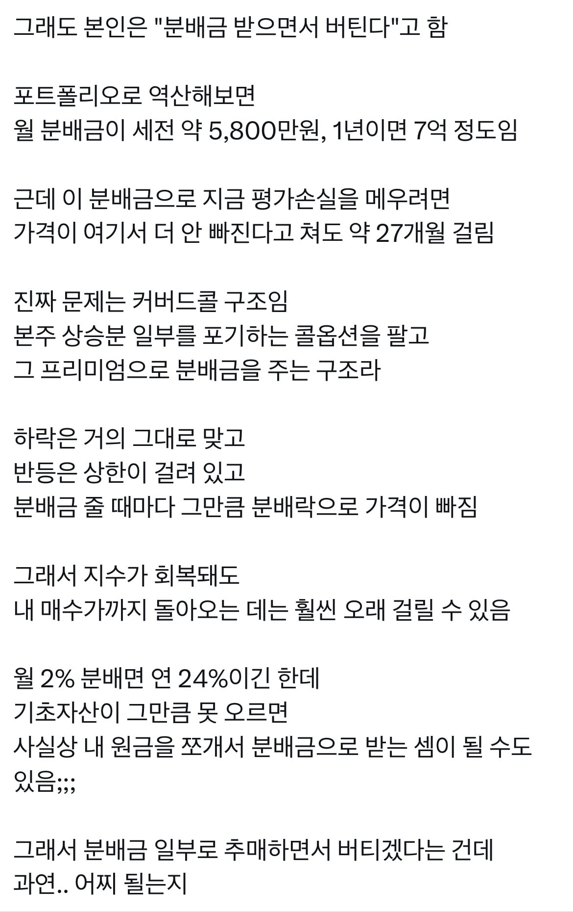

젭큐 젭피 최대상승장에 삿던거 마삼 정도던데?
개인도 커버드콜 포지션 자체적으로 취할 수 있도록
개인의 옵션 매도 허용해줬으면 좋겠다 ^^
그런데 그럴꺼면 그냥 본주 사는게?
커버드콜은 한번하락하면 다시 상방 돌리기 힘든구조라, 분배금으로 다시 채우는 건 진짜 힘듦.
저렇게 한번 하락하면 분배금으로 다시 본전되는데만 3년은 걸릴듯. 3년간은 더 안떨어진다는 가정하에..
커버드콜은 그냥 내자산 천천히 까먹으면서 현금 흐름만들때 써야지. 자산증식용은 절대아님.
지금은 살만한 시기.
난 짧게 배당 몇번 먹고 오르면 팔아버리는걸 반복하다가...
물리면 물타고 탈출하는걸 반복하게 됨ㅜㅡ
그래도 kodex200위클리랑 tsly는 지금 살만하다.
cony는 망한거 같아...
혹시알아? 코인이 존나 뜨는날이 ㅋㅋ
커버드콜은 기본적으로 옵션투자임. 주식매수+콜옵션매도라서 횡보시 이득이지만 상승은 막혀있고 하방은 열려있는 진짜 파생상품이지
커버드콜 포폴를 좇같이 짯구만 ㅋㅋ
커버드콜 꺼드럭 대는 애들 착해져서 좋으네 ㅋㅋ
뭐 어차피 장 박살나서 커버드콜 아니었어도 저꼴임
커버드콜은 하방은 뚫려있고 상방은 제한되어 있음.
이런걸 왜하는지???
커버드콜이 문제다 = X
국장이 문제다 = O
걍 본인 투자성향을 알고 포트폴리오 구축을 해야하는데
그러기가 쉽지않지